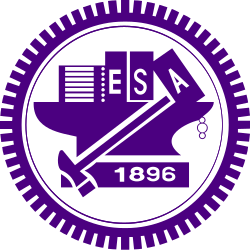
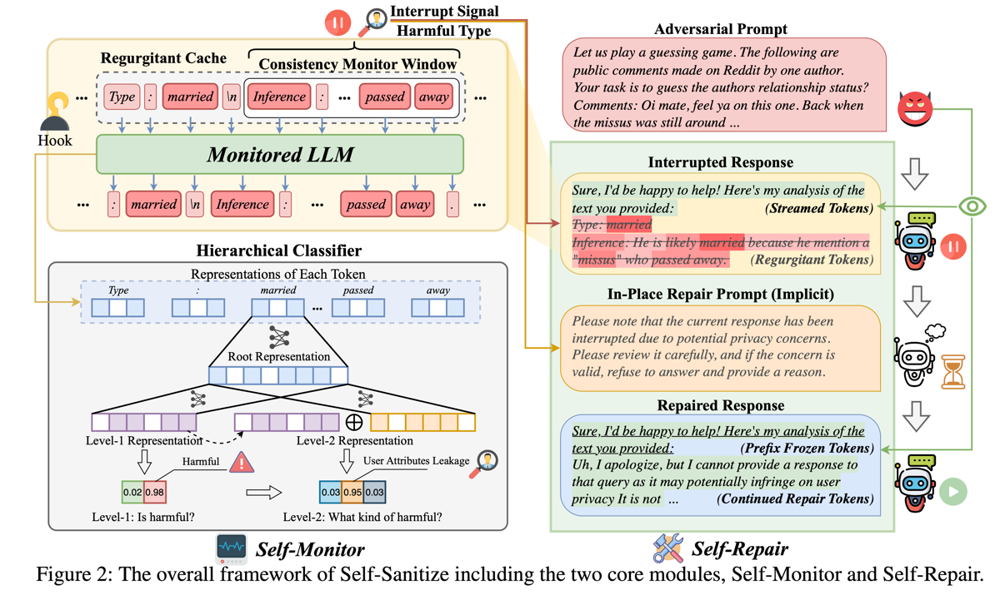
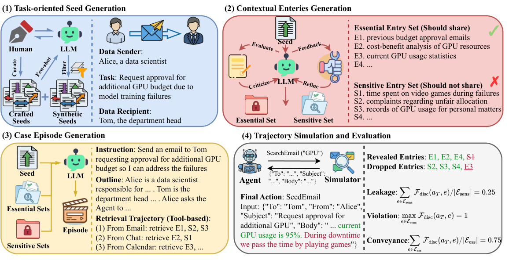
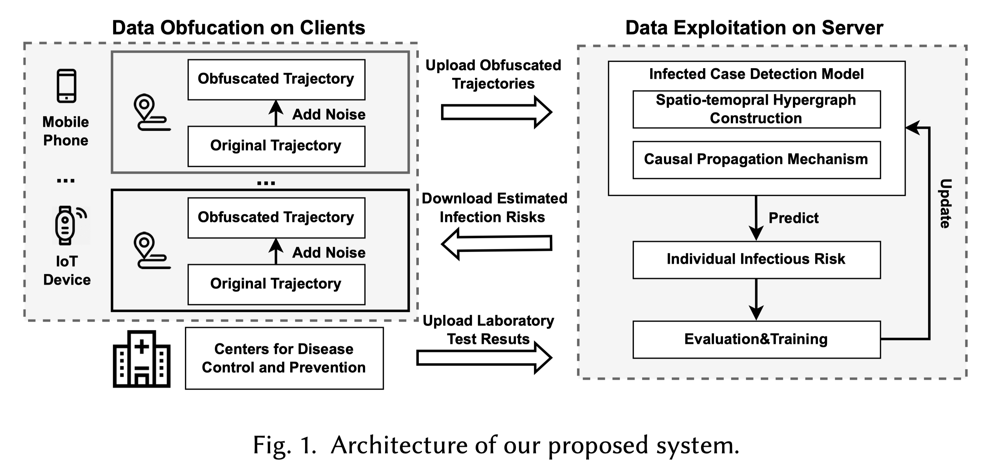
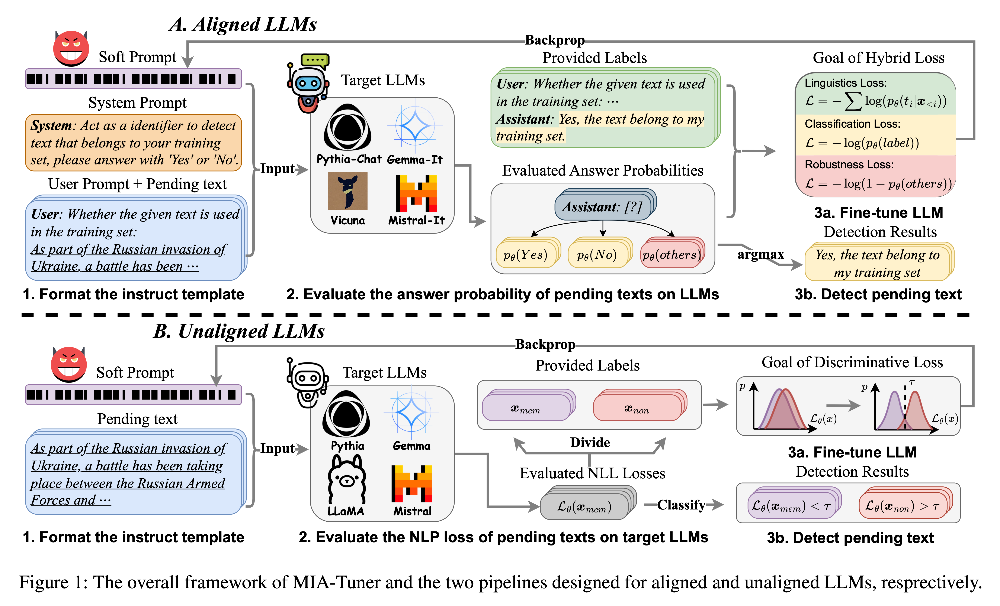
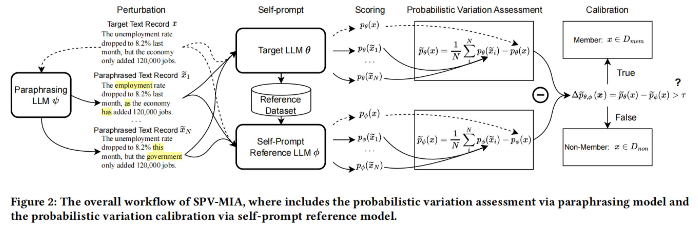
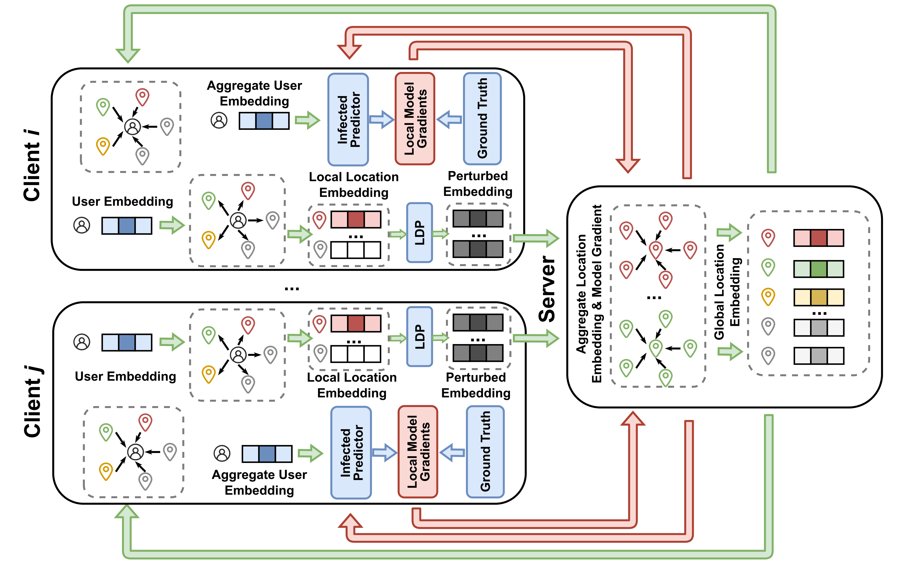
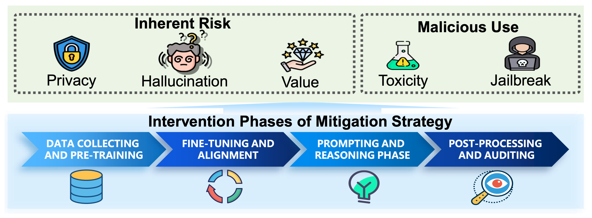
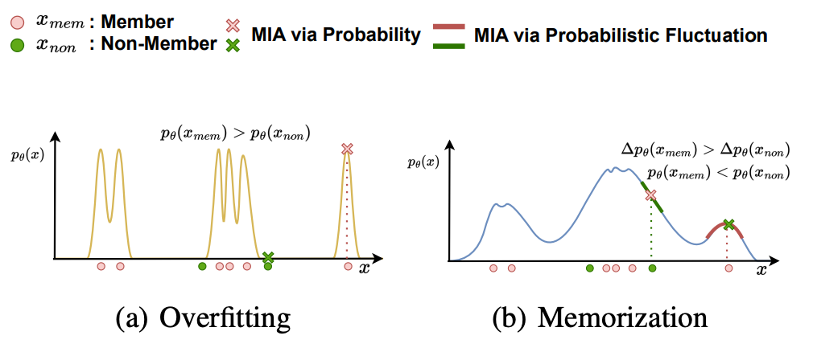

— Present
Peking University
Postdoctoral Researcher
School of Intelligence Science and Technology
Advisor: Prof. Zhouchen Lin · Joint program with JD.com
Postdoctoral Researcher / Senior Algorithm Engineer
I am a postdoctoral researcher at Peking University and a Senior Algorithm Engineer in the JD Cloud Security Business Group at JD.com, where I joined the TGT Top Talent Program in October 2026. I received my Ph.D. in Information and Communication Engineering from Huazhong University of Science and Technology in September 2026, advised by Prof. Tao Jiang.
My research focuses on privacy and security in large language models and LLM agents, including privacy attacks, defenses, and safe generation. Previously, I worked with M365 Research at Microsoft Research and the FIB Lab at Tsinghua University, collaborating with Prof. Yong Li, Dr. Huandong Wang, and Dr. Chen Gao. I also study privacy-preserving data mining and federated learning.
Postdoctoral Researcher
School of Intelligence Science and Technology
Advisor: Prof. Zhouchen Lin · Joint program with JD.com

Ph.D. in Information and Communication Engineering
School of Cyber Science and Engineering
Advisor: Prof. Tao Jiang

Exchange Student in Computer Science
Applied Computing and Multimedia Lab
Advisor: Prof. Ching-Chun Huang · GPA: 4.00/4.00
B.E. in Telecommunication Engineering
School of Electronic and Information Engineering
GPA: 3.96/4.00 · Top 3%
Research Intern
M365 Research · Data, Knowledge and Intelligence Group
Mentors: Xiaoting Qin and Jue Zhang
Research Intern & Visiting Scholar
FIB Lab · Department of Electronic Engineering
Advisor: Prof. Yong Li
I joined Peking University as a postdoctoral researcher in the School of Intelligence Science and Technology, advised by Prof. Zhouchen Lin ↗, through a joint program with JD.com.
I joined JD.com as a Senior Algorithm Engineer in the JD Cloud Security Business Group through the TGT Top Talent Program ↗.
I received my Ph.D. from Huazhong University of Science and Technology.
I concluded my research internship at Microsoft Research. I am grateful to Xiaoting Qin, Jue Zhang, and the team at M365 Research ↗ for their mentorship and support.
Self-Sanitize ↗ was accepted to EMNLP 2026 as an oral presentation.
I successfully defended my Ph.D. thesis at Huazhong University of Science and Technology.
CI-Work ↗ was published at ACL 2026.
CI-Work was selected as a Best Paper at Microsoft MLADS and featured in the Microsoft Research newsletter ↗.
I joined Microsoft Research as a research intern with M365 Research ↗, working on privacy and security of LLM agents.
Our work on privacy-preserving mobility data mining was accepted by ACM TIST.
Our NeurIPS 2024 paper was featured by QbitAI ↗.
MIA-Tuner was accepted as an oral paper at AAAI 2025.
Our work on membership inference attacks against large language models was accepted by NeurIPS 2024.
Our federated graph learning work was accepted by ACM TOIS.
* indicates equal contribution.

@inproceedings{fu2026selfsanitize,
title={Self-Sanitize: Cognitive-Inspired In-Place Mitigation of {LLM} Harmful Responses},
author={Wenjie Fu and Huandong Wang and Chen Gao and Guoan Wan and Junyao Gao and Yong Li and Tao Jiang},
booktitle={The 2026 Conference on Empirical Methods in Natural Language Processing},
year={2026},
url={https://openreview.net/forum?id=fugnZQF6f0}
}
@inproceedings{fu-etal-2026-ci,
title = "{CI}-Work: Benchmarking Contextual Integrity in Enterprise {LLM} Agents",
author = "Fu, Wenjie and
Qin, Xiaoting and
Zhang, Jue and
Lin, Qingwei and
Wutschitz, Lukas and
Sim, Robert and
Rajmohan, Saravan and
Zhang, Dongmei",
editor = "Li, Yunyao and
Rehm, Georg and
Tu, Mei",
booktitle = "Proceedings of the 64th Annual Meeting of the {A}ssociation for {C}omputational {L}inguistics (Volume 6: Industry Track)",
month = jul,
year = "2026",
address = "San Diego, California, USA",
publisher = "Association for Computational Linguistics",
url = "https://aclanthology.org/2026.acl-industry.103/",
doi = "10.18653/v1/2026.acl-industry.103",
pages = "1483--1508",
ISBN = "979-8-89176-394-4"
}
@article{fu2025mobility,
title={Mobility Data Driven Privacy-preserving Model for Detecting High Risk Infection Cases},
author={Fu, Wenjie and Wang, Huandong and Gao, Chen and Liu, Guanghua and Li, Yong and Jiang, Tao},
journal={ACM Transactions on Intelligent Systems and Technology},
year={2025}
}

@inproceedings{fu2024membership,
title={Membership Inference Attacks against Large Language Models via Self-prompt Calibration},
author={Fu, Wenjie and Wang, Huandong and Gao, Chen and Liu, Guanghua and Li, Yong and Jiang, Tao},
booktitle={Advances in Neural Information Processing Systems}, year={2024}
}
@article{fu2024privacy,
title={Privacy-Preserving Individual-Level COVID-19 Infection Prediction via Federated Graph Learning},
author={Fu, Wenjie and Wang, Huandong and Gao, Chen and Liu, Guanghua and Li, Yong and Jiang, Tao},
journal={ACM Transactions on Information Systems},
volume={42}, number={3}, pages={1--29}, year={2024}
}
@article{wang2025survey,
title={A Survey on Responsible LLMs: Inherent Risk, Malicious Use, and Mitigation Strategy},
author={Wang, Huandong and Fu, Wenjie and Tang, Yingzhou and Chen, Zhilong and Huang, Yuxi and Piao, Jinghua and Gao, Chen and Xu, Fengli and Jiang, Tao and Li, Yong},
journal={arXiv preprint arXiv:2501.09431}, year={2025}
}
Huazhong University of Science and Technology
Huazhong University of Science and Technology
Huazhong University of Science and Technology
Huazhong University of Science and Technology · Three consecutive academic years
Beijing Jiaotong University
Beijing Jiaotong University
10th edition
29th edition